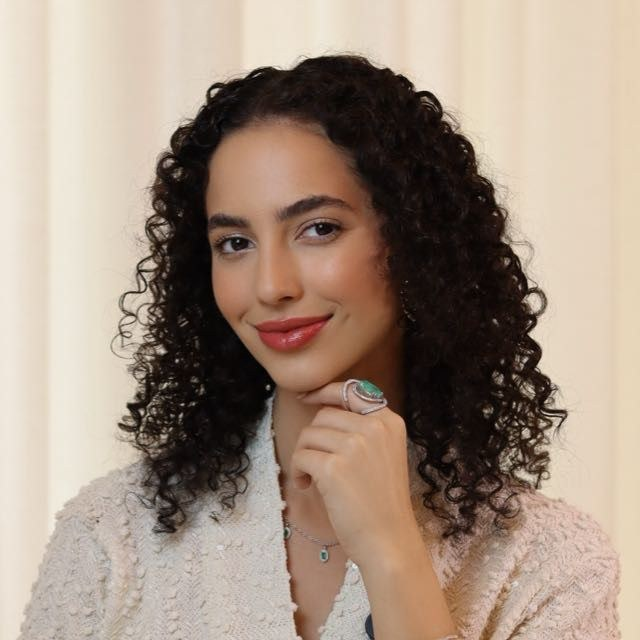

Nutrição • Modelo comercial • Imagem
Julia Giovanuci
Nutricionista e modelo comercial
CRN5 24266 | Luís Eduardo Magalhães - BA | Presencial e on-line
Nutrição consciente. Imagem elegante. Vida com mais leveza.
Acompanhamento nutricional para mulheres que desejam mais consciência alimentar e conteúdo comercial para marcas que valorizam estética, confiança e autoridade.
Escolha seu caminho
Uma página para pacientes e marcas entenderem rapidamente como trabalhar comigo.
A atuação da Julia é organizada em duas frentes complementares: acompanhamento nutricional e imagem comercial para marcas.
Nutrição
Acompanhamento nutricional com escuta, consciência e vida real.
Para mulheres que desejam construir uma relação mais leve com a alimentação, com orientação individualizada e sem promessas milagrosas.
Psiconutrição e nutrição clínica
Atendimento voltado à consciência alimentar, rotina possível, clareza nas escolhas e relação mais equilibrada com a comida.
Atendimento voltado à consciência alimentar, rotina possível, clareza nas escolhas e relação mais equilibrada com a comida.
Avaliação individualizada
Questionário pré-consulta, bioimpedância, antropometria, avaliação global, análise de exames e inspeção clínica quando aplicável.
Questionário pré-consulta, bioimpedância, antropometria, avaliação global, análise de exames e inspeção clínica quando aplicável.
Plano alimentar e acompanhamento
Plano entregue na consulta, acompanhamento por WhatsApp durante o período contratado e consulta com duração aproximada de 120 minutos.
Plano entregue na consulta, acompanhamento por WhatsApp durante o período contratado e consulta com duração aproximada de 120 minutos.
Atendimento presencial e on-line
Presencial em Luís Eduardo Magalhães - BA e on-line para Brasil e exterior.
Presencial em Luís Eduardo Magalhães - BA e on-line para Brasil e exterior.
Imagem e marcas
Modelo comercial e conteúdo para marcas que buscam elegância e autoridade.
Para lojas, clínicas, studios, marcas de beleza, moda, saúde, experiências, cosméticos e empresas que desejam comunicar valor com estética limpa e presença profissional.
Provador para lojas
Apresentação de peças, looks e composições com imagem sofisticada, naturalidade e comunicação alinhada à marca.
Apresentação de peças, looks e composições com imagem sofisticada, naturalidade e comunicação alinhada à marca.
Campanhas e publicidade
Stories patrocinados, reels, post no feed, presença em eventos, cobertura comercial e conteúdo mensal.
Stories patrocinados, reels, post no feed, presença em eventos, cobertura comercial e conteúdo mensal.
UGC e modelo comercial
Conteúdos que podem ser usados pela marca em seus próprios canais, além de ensaios e campanhas como modelo.
Conteúdos que podem ser usados pela marca em seus próprios canais, além de ensaios e campanhas como modelo.
Cosméticos, beleza e make
Atuação como modelo para maquiagem, cosméticos, estética, cabelo, moda feminina, wellness e experiências.
Atuação como modelo para maquiagem, cosméticos, estética, cabelo, moda feminina, wellness e experiências.
Presença digital
Métricas principais
Dados de audiência do perfil principal, úteis para marcas, campanhas e parcerias.
8.332
seguidores
241,6K
alcance médio mensal
3.236
visualizações médias nos stories
3.487
visualizações médias nos reels
88,5%
público feminino
25–34
faixa etária principal
LEM
cidade principal
SP • GO • RJ
também alcança
Sobre
Uma atuação que une saúde, imagem e verdade.
Sou Julia Giovanuci, nutricionista formada pela Pontifícia Universidade Católica de Goiás, com atuação em Psiconutrição e Nutrição Clínica, e modelo comercial.
Acredito em uma nutrição que olha para a pessoa antes de olhar para calorias. Meu trabalho busca consciência, harmonia e leveza na relação com a alimentação, o corpo e a rotina. Como modelo comercial, represento marcas que valorizam estética, qualidade, confiança e posicionamento.
Formação: Nutrição — PUC Goiás, 2020
Registro: CRN5 24266
Atuação: Psiconutrição, Nutrição Clínica e Modelo Comercial
Experiência: workshops, entrevistas, palestras e campanhas comerciais
Em breve
Produtos digitais
Guias, conteúdos e materiais para quem deseja organizar a alimentação, comer melhor sem extremos e construir uma rotina mais consciente.
Redes
Acompanhe o conteúdo
Conteúdos sobre nutrição, moda, provadores, beleza, autocuidado e vida real.
Contato
Fale com a Julia
Use o canal correto para agilizar o atendimento.
Pacientes
WhatsApp: 77 3628-3016
Marcas e parcerias
WhatsApp: 77 99971-1033
E-mail
giovanucijulia@gmail.com
Localização
Avenida Tancredo Neves, 2173, Jardim Paraíso I, Luís Eduardo Magalhães - BA
Atendimento
Presencial em Luís Eduardo Magalhães - BA e on-line para Brasil e exterior.
Horário habitual: 8h às 12h e 14h às 18h, com possibilidade de agendamento especial.
Informações, disponibilidade, formatos comerciais e condições de atendimento devem ser confirmados diretamente pelos canais oficiais. Valores comerciais são enviados sob proposta.